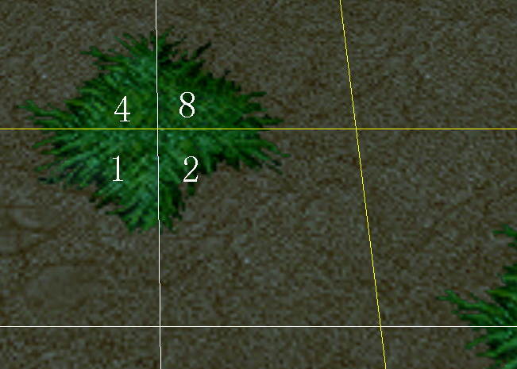
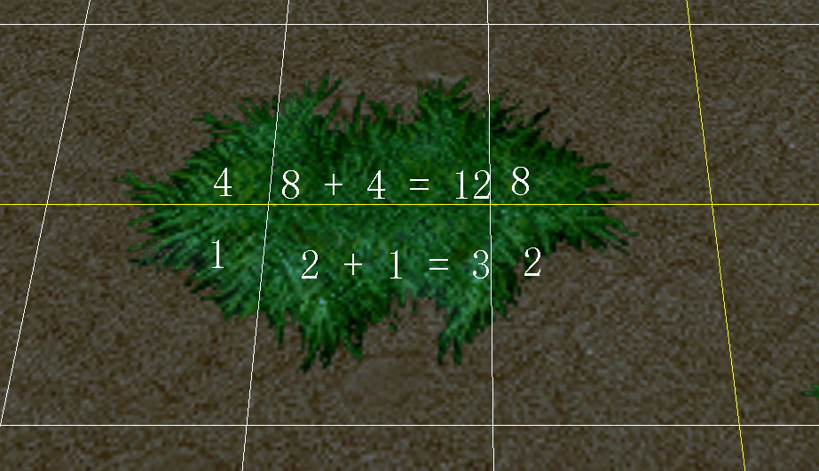
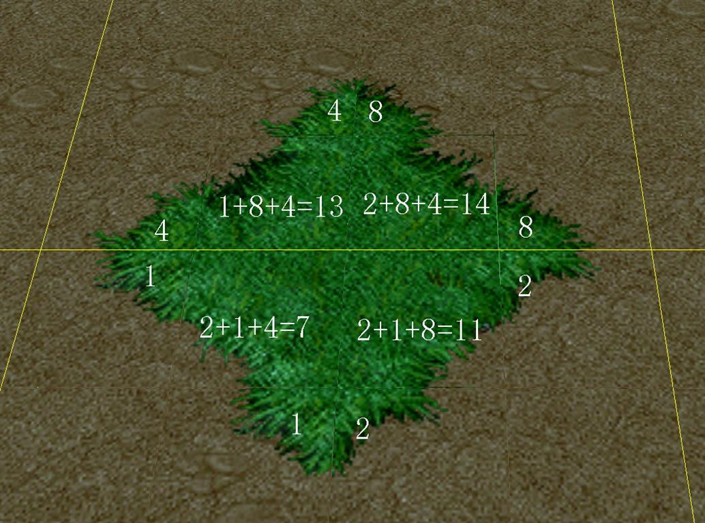
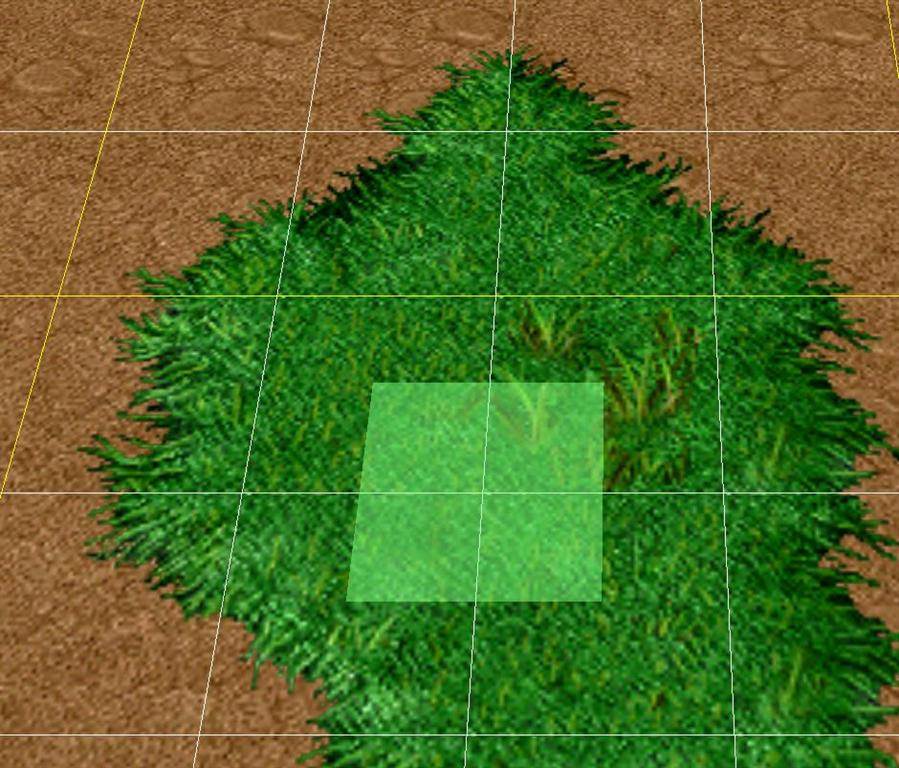

上次发了个这样的图，结果被某些人鄙视了，很郁闷啊。
我们把一个魔兽3的草地贴图提取出来，并且用下面的分块方法来标示每一块小贴图，然后通过一种特定的方式来组织这些小贴图，形成真正的地表贴图。
魔兽争霸编辑器中刷地表时，刷一格就会影响四个周围的渲染块，具体如何影响？请看下图：
这是贴图的分块索引方法：

通过魔兽争霸地图编辑器点一下刷地表草之后，在地图中就会出现一小块绿色草地地表，请注意在图中我用数字1、2、4、8来表示四个渲染块对应的贴图索引，而这个1、2、4、8是固定的。代表的是相对于笔刷位置（笔刷位置是指周围四个渲染块中间位置）来说，左下角的角落贴图索引是1；右下角的角落贴图索引是2；左上角的角落贴图索引是4；右上角的角落贴图索引是8。如下图所示：

如果在已经有草地的地表旁边再点一下刷地表，会刷成如下图这个样子：
看明白8+4=12没有？这里是两个角落贴图索引相加后的结果，得到12，就从文章开头的索引贴图中找到12对应的小贴图贴上去。
2+1=3同理，用两个角落贴图索引相加后的结果3从索引贴图中找到3对应的小贴图贴上去。
这样得到的效果就会变成如下图：

这里有是更复杂的情况，有三个角落相加，1+8+4=13，不过道理都是一样的。

最后说一下四周都有贴图的情况，看到中间笔刷位置没有？笔刷左上方有一个贴图，对应的是贴图索引中的0，这是因为他四个角都填充了，所以就需要从0、16~31中随机选择一个小贴图贴上去以完整的填充整个渲染块：

至此贴图选择的方法已经说完了。
至于渲染的方法，都是大同小异，这里就不多说了。